Tonemachi, Ibaraki: things to do, food and stays
Tonemachi · Ibaraki
Tonemachi
Highlighted on the Ibaraki map.
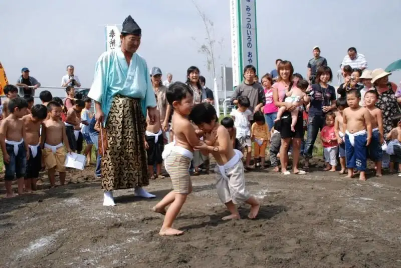
Stay
No bookable places to stay found in Tonemachi — nearest options in Ryugasaki.
Dining
中華そば・つけそば 浜屋
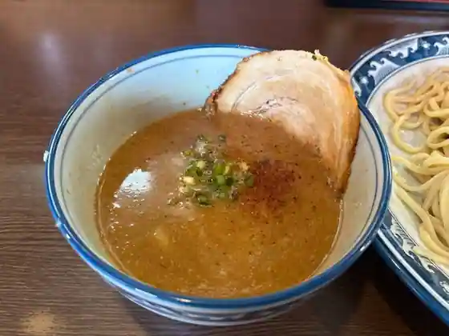
Chuka Soba Tsukesoba Hamaya
コーヒーハウス とむとむ 利根町店
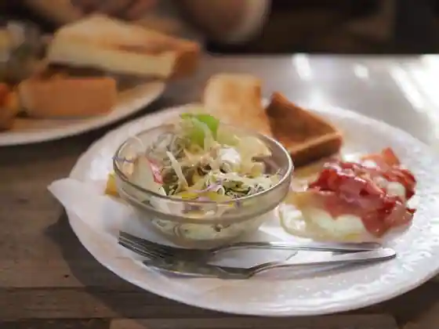
Coffee House Tomutomu Tonemachi
味よし
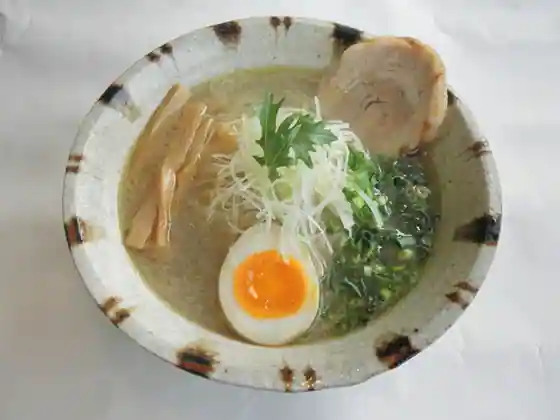
Aji Yoshi
オノパン
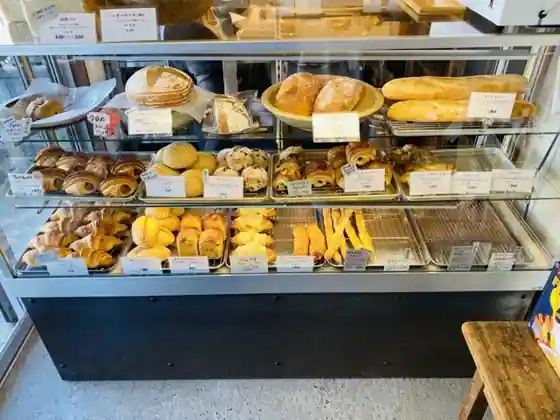
Ono Bakery
海鮮うおすぎ
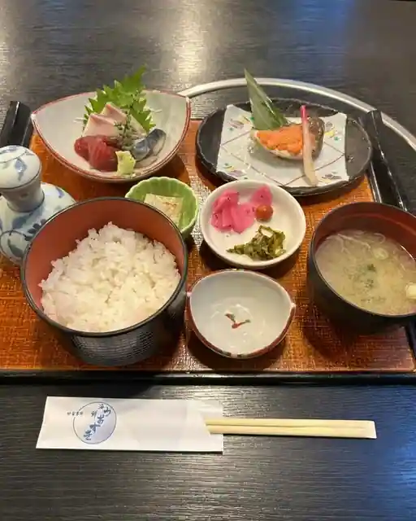
Kaisen Uosugi
牛肉食堂 ミミカフェ
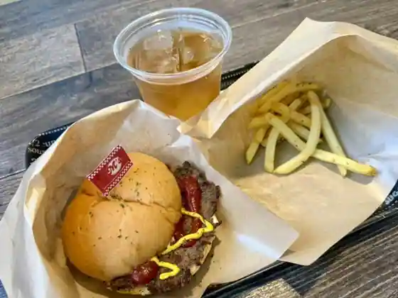
Gyuniku Shokudo Mimi Cafe
利根飯店
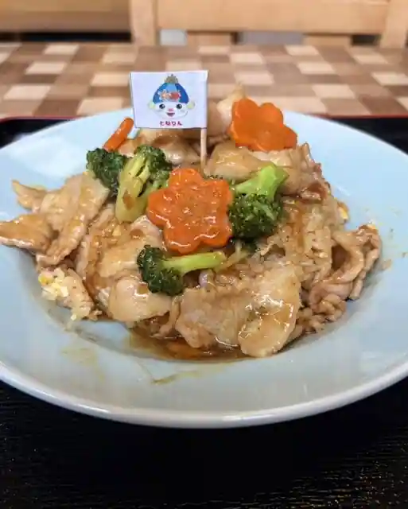
Tone Meshi
ドルチェ
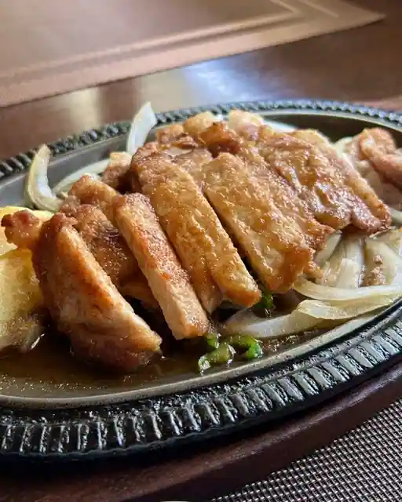
Doruche
りっくゆ
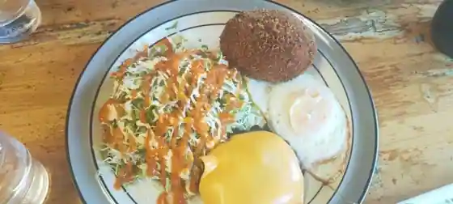
Rikkuyu
そば処 吉ろべ衛
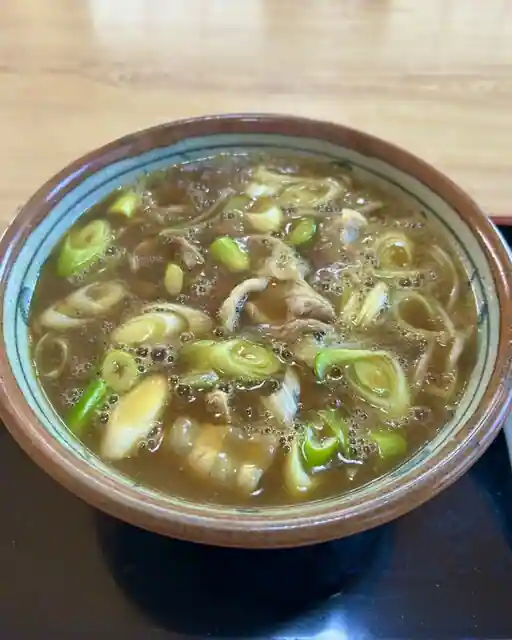
Soba Tokoro Kichi Robe Mamoru
一膳
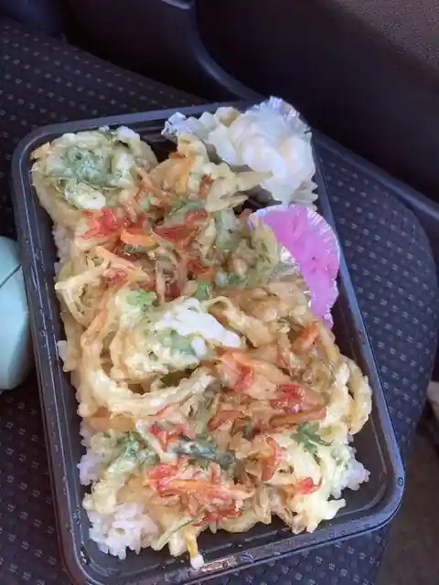
Ichi Zen
クリームハウス
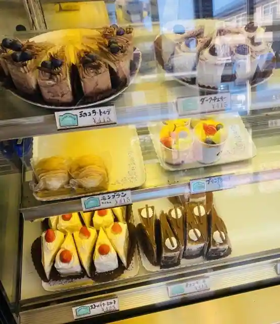
Kurimu House
シュガーポット
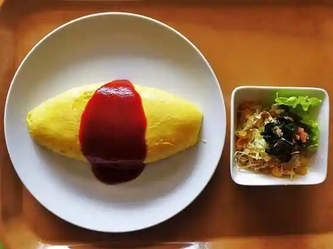
Shugapotto
ひなたぼっこ
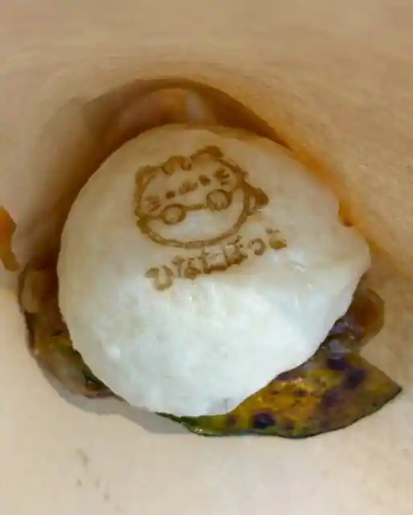
Hinatabokko
ママとこcafe
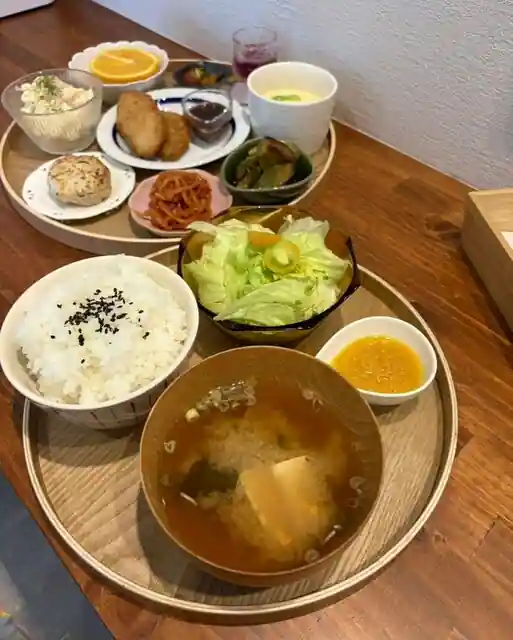
Mama Toko cafe
ラ・パティスリー ルプランジュ
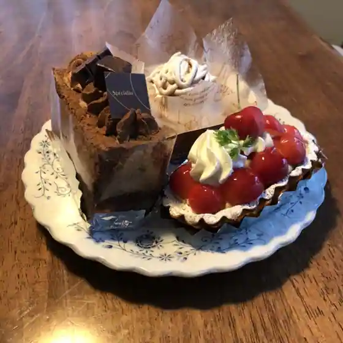
Ra Pateisuri Rupuranju
きくば
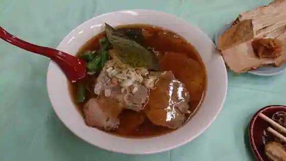
Kikuba
Syun358.
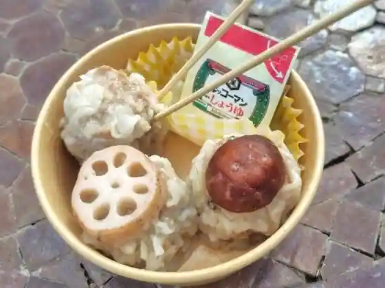
Syun358.
てっちゃん寿司
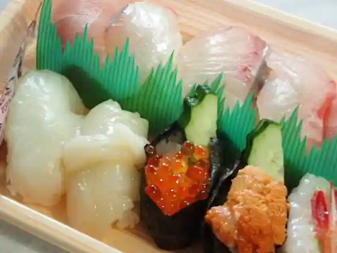
Tetchan Sushi
米粉のおやつまるの輪工房
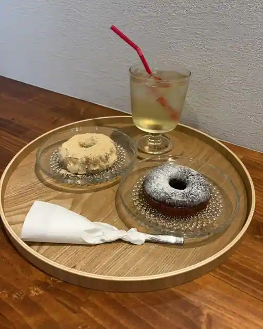
Beifun Noyatsumaruno Wa Kobo
居酒屋かずみ
Izakaya Kazumi
生そば 車や
Naso Ba Kuruma Ya
Sights
Kotohira Jinja Hono Sumo
JA Ryugasaki City Tonemachi Nosambutsu Chokubai Tokoro
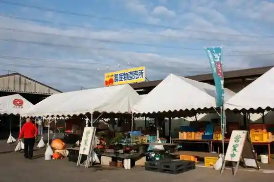
Yanagida Kunio Kinen Park
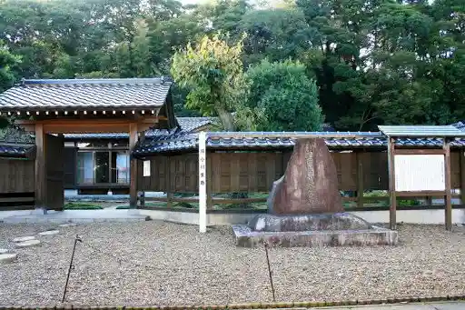
Tonemachi Shinsui Park
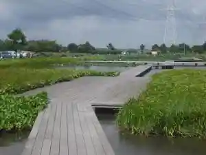
Akamatsu Sotan Kyukyo
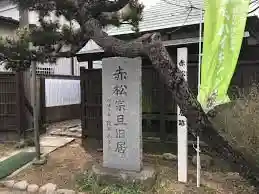
Tonemachi Kawa Sakura Zutsumi